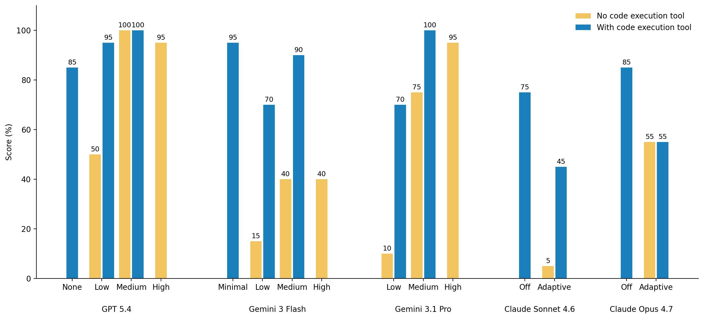
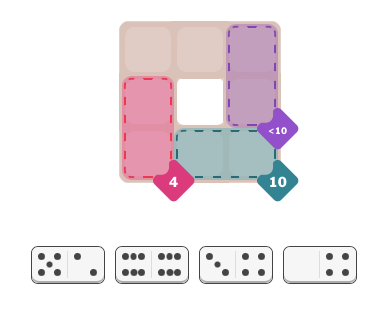
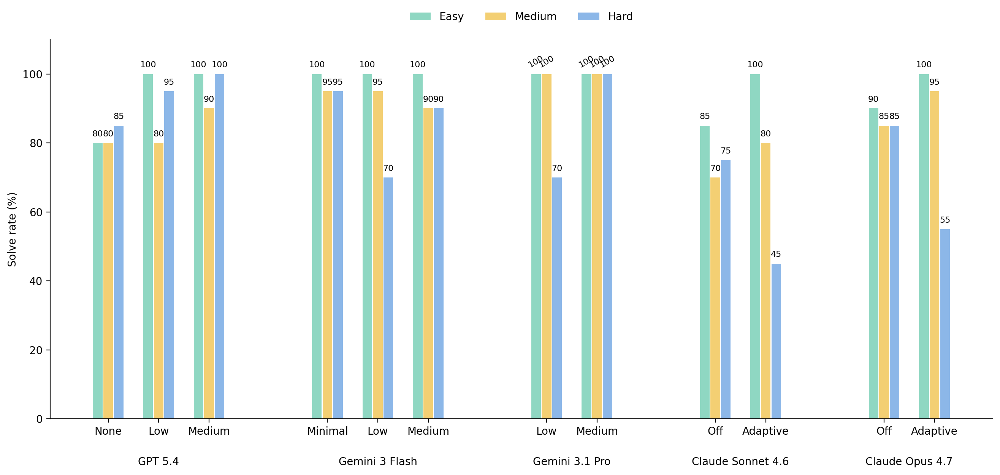

AI vs. New York Times Pips
View ResultsIntroduction
Pips is a new New York Times logic puzzle, introduced in August 2025. Its format is familiar, with a faint resemblance to Sudoku. A grid, usually irregularly shaped, is divided into a number of regions, each satisfying a given mathematical constraint, like ‘sums to 7’ or ‘all numbers equal’. The player is given a set of two-sided domino tiles, which must be laid on the grid in a way that satisfies all of the regional constraints. The puzzle is released daily in three difficulties: easy, medium, and hard. The easy puzzles are genuinely trivial, while the hard ones are often tricky and require some persistence to solve.
Out of pure curiosity, I was interested to see how AI models would perform on Pips. I thought the puzzle’s somewhat novel format would make it a useful toy problem for seeing how models handle unfamiliar-looking tasks. Although I expected that the models would solve the puzzle, I still wanted to run the experiment to see if this was true. Would some models stumble? How would their performance change with puzzle difficulty? How would it compare across providers? I thought there was a chance I could learn something new, so I just went for it.
Summary
It turns out that the question of whether "models" can solve Pips is underspecified. Although some "naked" models—that is, models without tools—perform well on Pips, this is not usually the best way to solve the puzzle.
A key distinction to emerge from the experiment is whether the models also have access to a code execution tool. Although this seems obvious in retrospect, I confess that I did not have this distinction clearly in mind when I first thought of the experiment. This is partly because I had not realized that Pips is best solved algorithmically, but also partly because I had unthinkingly fallen into the habit of assuming that models are the sole source of intelligence across problem-solving tasks.
Despite its slightly unfamiliar format, Pips belongs to a class of constraint satisfaction problems that can be solved with a fairly standard backtracking algorithm—basically, an algorithm that recursively examines candidate board layouts and prunes branches which turn out to be dead ends. When given access to a code tool—all of the models tested in the experiment have a native implementation of such a tool, which can be enabled in API requests—models generally solve Pips by writing a backtracking algorithm and executing it via the tool. By contrast, without a code tool, models end up trying to implement a similar algorithm inside their reasoning context, an environment poorly suited to preserving and manipulating precise, complex state, like the current board layout, which tiles have been used, and so on.
Although model intelligence is being used to solve Pips in both settings, the role of that intelligence is different in each—and with it what the experiment is measuring. Without a code tool, success on the puzzle depends heavily on the model’s ability to maintain and manipulate the problem state inside its own context. With a code tool, the model’s role shifts toward recognizing that the puzzle can be solved algorithmically, formulating a solving strategy, writing code to carry it out, and interfacing with the tool.
Even with access to a code tool, in the experiment the native API-based model-tool agent loop was sometimes brittle. In many cases, models wrote a perfectly correct puzzle solver, only for failures to occur at the hand-off points between the model and the tool. Most commonly, the model would make an apparently harmless adjustment to the tool’s correct response, introducing an error into what had otherwise been a correct solution.
The experiment also showed that using more intelligence—stronger models and higher thinking budgets—to solve the puzzle is not always beneficial. It’s not just that similar performance can sometimes be achieved more cheaply and efficiently with weaker models, though that is important. Rather, in some cases, giving a model more room to think made its performance worse, by making it more likely that it would try to reason through the puzzle in-context instead of delegating to the code tool.
Experimental Setup
One of the challenges in running the experiment was that there was no straightforward, standardized way of sending puzzles to the model APIs. For several reasons, it didn’t make sense to send screenshots of the puzzle. This would have entangled models’ puzzle-solving ability with their image recognition and parsing capabilities, and introduced complications such as verifying that models had parsed a puzzle correctly and validating their proposed solutions.
Instead, I sent the models a code-based representation of each puzzle. To do this, I built an interface that allowed me to recreate the New York Times puzzle: lay out the grid, assign regional constraints, and specify available tiles.
Each API call included three main pieces of puzzle data:
- Grid: the puzzle represented as an array of arrays, with each sub-array corresponding to a row of the grid. Each item in a row represented a cell: assigned to a region, marked as unconstrained, or set to null (for an empty/unplayable part of the board).
- Regional constraints: an object describing the constraints per region, along the lines of “A”: {constraint: “sum”, value: 9}. In line with the New York Times puzzle, there are five types of constraints: ‘sum’, ‘sum less than’, ‘sum greater than’, ‘all equal’, and ‘all different’.
- Tiles: an array of the available domino tiles, with each tile represented as an array of two numbers, one for each side of the tile.
This representation of the puzzle was sent along with a description of the puzzle’s rules in the system instructions message of the API call, and a JSON schema specifying the required response format, allowing for straightforward response verification.
The following models were tested in the experiment: (1) GPT 5.4 (OpenAI), (2) Gemini 3 Flash (Google), (3) Gemini 3.1 Pro (Google), (4) Claude Sonnet 4.6 (Anthropic), and (5) Claude Opus 4.7 (Anthropic). Ultimately, one of the key distinctions to emerge from the experiment was between two settings: one in which models were given access to the native code execution tool provided with their APIs, and one in which they were not.
These models were tested under various ‘thinking’ settings, outlined in detail in the experiment's results page. The experiment was run on 20 daily puzzles (at three difficulty settings) between April and May 2026.
Results
Although this seems obvious in retrospect, the "naked" models—that is, the core LLMs without access to a code tool—are not naturally well-suited for solving Pips, especially as puzzle difficulty and complexity increase. Some of the models performed well without a code tool: GPT 5.4 medium had a 100% solve rate on hard puzzles, while GPT 5.4 high and Gemini 3.1 Pro high each scored 95% (Figure 1). However, these results came at a relatively high average cost ($0.19, $0.23, and $0.26 per correct response, respectively, for those models) and latency (3m 9s, 4m 12s, and 2m 41s, respectively). Other models without tools struggled with the puzzle. Claude Opus 4.7, for example, solved only 55% of hard puzzles, often failing after consuming its full token budget.
More importantly, access to tools made weaker models, even at lower thinking settings, strong performers on the puzzle. This pattern held broadly across the models tested. For example, without tools, Gemini 3 Flash solved at most 40% of hard puzzles, even with thinking = high. With tools, Gemini 3 Flash with thinking = minimal solved 95% of those puzzles (Table 1). Similar gains appeared with Gemini 3.1 Pro low, which improved from 10% to 70%; Gemini 3.1 Pro medium, which improved from 75% to 100%; and Claude Sonnet 4.6 with adaptive thinking, which improved from 5% to 45%. Models equipped with tools also generally solved puzzles at lower cost and with lower latency.

| Model | Thinking | Tool | Score | Average Cost (US$) | Average Latency (s) |
|---|---|---|---|---|---|
| GPT 5.4 | Low | No | 50% | $0.13 | 62 |
| GPT 5.4 | Low | Yes | 95% | $0.07 | 71 |
| GPT 5.4 | Medium | No | 100% | $0.19 | 189 |
| GPT 5.4 | Medium | Yes | 100% | $0.09 | 92 |
| Gemini 3 Flash | High | No | 40% | $0.08 | 103 |
| Gemini 3 Flash | Minimal | Yes | 95% | $0.03 | 57 |
| Gemini 3.1 Pro | Medium | No | 75% | $0.18 | 112 |
| Gemini 3.1 Pro | Medium | Yes | 100% | $0.10 | 125 |
| Claude Opus 4.7 | Adaptive | No | 55% | $0.31 | 126 |
| Claude Opus 4.7 | Off | Yes | 85% | $0.16 | 53 |
Why do code tools make even weaker models better at solving Pips? As I learned, when given access to a coding environment, instead of trying to solve puzzles by relying purely on internal reasoning, models just write code to solve the puzzle. Even if Pips is a somewhat novel format, it belongs to a class of puzzles—like Sudoku, N-Queens, crosswords, and other constraint satisfaction problems—that models have likely seen many times during training. These problems are solvable with broadly similar techniques, such as recursive backtracking: enumerate potential solution layouts, explore candidate assignments, and backtrack and prune branches when assignments violate constraints. Examining the API response objects, which reveal the models’ code execution calls and the code they ran, shows that in the successful tool-mediated solves, models always implemented some variation of recursive backtracking to solve the puzzle.
This also helps explain why many models without tools struggled with the puzzle and/or required heavy token consumption to solve it, especially as the puzzles became harder. Without tools, models have to perform both the recursive search process and the accompanying bookkeeping inside their reasoning context: tracking which cells are covered, which tiles remain, which values have been assigned to each region, and which branches have already failed, all without a durable board, ledger, or other explicit data structure. Models that reveal thinking traces in their API responses often showed a long text-based version of backtracking, along the lines of:
“Maybe tile [0,6] goes here; then region A needs...
but if C is all equal... that uses [2,2], leaving...
wait, then region D cannot be satisfied; let me go back.”In other words, models were trying to do in language what a solver can do directly in memory. This makes the process both token-intensive and prone to drift: a single probabilistic mistake in preserving or reconstructing state can create significant overhead to identify, unwind, and repair.
The backtracking algorithm
Although we now take it for granted that frontier models are good at writing code, I still find their ability to write a working backtracking solver for Pips genuinely impressive. The underlying algorithm is not exotic, and the models have likely seen many examples of recursive backtracking and constraint satisfaction problems. But the solver is not trivial either, and the model is not simply reproducing a known "Pips solver."
Consider, for example, a simple Pips puzzle like this one, from May 11th:

This puzzle gets represented to the model as the grid:
['unconstrained', 'unconstrained', 'A']
['B', null, 'A']
['B', 'C', 'C']With the regional constraints:
A: {constraint: "sum_lt", value: 10}
B: {constraint: "sum", value: 4}
C: {constraint: "sum", value: 10}And the tileset:
[[5, 2], [6, 6], [3, 4], [0, 4]]To solve this puzzle algorithmically, a few steps are required. First, the solver has to identify the possible geometric tilings of the board, i.e. the configurations in which tiles can cover the board while ignoring their values. In this simple puzzle, there are only two possible geometric tilings: one in which the top-left cell is paired horizontally, and one in which it is paired vertically. Once that first choice is made, the rest of the cell pairings are forced.
The solver represents these tilings as a set of adjacencies. For example, in the case where the first tile is laid horizontally on the top-left cell, the adjacencies are:
[[0, 0], [0, 1]]
[[0, 2], [1, 2]]
[[2, 2], [2, 1]]
[[2, 0], [1, 0]]For larger or less constrained puzzles, the number of possible tilings can be substantially greater, but the underlying idea is the same: before assigning numbers, the solver has to determine which pairs of adjacent cells can legally hold tiles.
The algorithm then loops through these possible layouts. For each layout, it tries assigning one of the available tiles to the first pair of cells, in each of its possible orientations. If a placement violates a regional constraint, the solver abandons that branch and tries another orientation or another tile. If the placement is viable, the solver proceeds to the next pair of cells, continuing recursively. If a later placement leads to a dead end, the solver backtracks and tries the next available alternative: a different orientation, a different tile, or eventually a different geometric layout. This continues until every tile has been placed and all of the regional constraints are satisfied, i.e. a solution is found.
Although the algorithm is not conceptually novel, it still has its subtleties. Translating the grid representation into a set of adjacencies is a reasonably tricky problem, especially since boards can be substantially more complex than the one above. Recursively laying tiles while checking against the regional constraints requires some delicate coordination between the various data structures representing the puzzle. In other words, the model is not merely "using code"; there is some magic in its ability to turn an unfamiliar puzzle format into a working solver.
Agentic loop failures
Even with access to a code tool, many models often failed to solve Pips (Figure 2). For example, Claude Opus 4.7 with adaptive thinking solved only 55% of hard puzzles even when it had access to a code tool. Other models did better, but failed often enough that it was interesting to me to try to understand why. Were they, for example, writing an incorrect solver? Although I didn’t investigate every failure, I looked at enough of them to see three recurring failure modes. (These became apparent only as I worked through the results; if I were running the experiment again, I would track them more systematically from the start).
The first was common across almost all models, and revolved around a
minor quirk in the puzzle format. Repeatedly, models would identify
that the puzzle could be solved with code, write a correct solver,
hand that off to the code execution tool, receive a correct
solution, and then make one small recurring error in the response
they sent back to the client. Because tiles in
Pips can be rotated, the code tool would often return a
perfectly correct result wherein some tiles were reversed from their
original orientation. For example, if tile [5, 6] went
into the cells at coordinates [0, 1] and
[0, 0], the solver might return something like
{tile: [6, 5], cells: [[0, 0], [0, 1]]}. The model
would then receive this response and notice that the tile had
originally been sent as [5, 6]. In its final JSON
response, it would ‘innocently’ restore the tile to its original
orientation, without also reversing the cell coordinates, thus
returning an ultimately incorrect solution. This error was seen
repeatedly when looking through the API response objects, despite
the puzzle instructions explicitly stating that tiles can be
reversed and that orientation matters in a correct response.

The second failure mode occurred when models had access to the code execution tool but did not use it; tool availability does not guarantee tool use. This was particularly common with the two Claude models, especially—and somewhat counterintuitively—when their thinking configuration was set to adaptive rather than off. Because adaptive thinking gives the models an allowance to reason, in many cases they would attempt to solve the puzzle in context, rather than writing a code-based solver—the more reliable strategy. Conversely, without a thinking budget, the models were quicker to write a solver and delegate to the tool, perhaps because they had little choice but to do so. Thus, under the ‘with-tools’ setting, Claude Sonnet 4.6 (no thinking) solved 75% of hard puzzles (vs. 45% w/adaptive thinking), and Opus 4.7 (no thinking) solved 85% of hard puzzles (vs. 55% w/adaptive thinking).
The third failure mode was unique to Gemini 3 Flash, and accounted
for 10 of that model’s 13 failures to solve the puzzle (across
thinking levels and puzzle difficulties). For some reason, the
model-tool combination would sometimes end up stuck in an endless
loop, until Gemini terminated the API call with a
TOO_MANY_TOOL_CALLS error message (and a huge tool
usage token count). In these cases, the tool would generate a
solution, but Gemini would never cleanly stop and return an answer.
Instead, it would keep asking the tool to verify the solution
(“check tiles again”, “verify one more time”, “wait, check region
G”, “final answer one last time”, and so on), until the API request
hit a tool-call limit and terminated.
Takeaways
The experiment was a good reminder for me that AI performance is not always produced by model intelligence alone. For certain problems, such as Pips, tools like code execution can be essential to achieving strong and reliable results. I expect the same to be true of other tasks requiring precise bookkeeping and state management, such as data analysis and financial modeling, especially as these grow complex. In these cases, tools allow each component to do what it does best: models handle strategy, planning, and coordination, while the code tool provides a precise and deterministic execution environment.
More broadly, the experiment made me think less in terms of isolated
model capability and more in terms of system design. Tool use is one
part of that, but not the whole story. Although this was a fairly
simple experiment, and was not intended to create a robust
Pips
solver, it helped me see how a carefully designed system could
improve performance on the puzzle. For example, supplementing the
native code execution tool with client-side helper tools—functions
like verifyResult and formatSolution—would
remove some overhead from the model and eliminate some of the
observed sources of error in the model-tool loop, like when the
model made small adjustments to the tool’s correct response. More
explicit prompting could also nudge the model to use the tool more
effectively. For example, instead of the experiment’s deliberately
neutral instruction—"You have access to a code execution/interpreter
tool"—a strategy-explicit prompt might add something like: "Use the
tool to solve the puzzle rather than relying on your internal
reasoning."